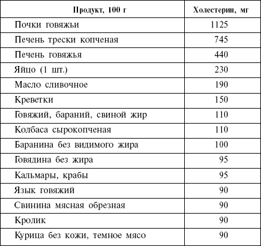
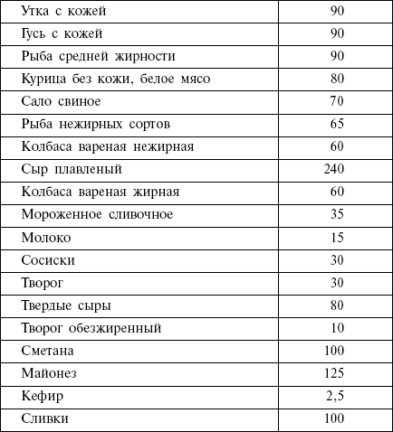

Размышления на тему холестерина

Что такое холестерин и какая связь между уровнем холестерина и нашей диетой? Можно ли придерживаться низкоуглеводной диеты страдающим атеросклерозом? Давайте разбираться.
Во-первых, хочу сразу хотя бы частично реабилитировать ненавидимый всеми холестерин. Заявляю со всей ответственностью: холестерин – нужное нам вещество. Вопреки расхожему мнению о вреде холестерина, он нам действительно необходим. В организме холестерин способствует формированию внешней клеточной мембраны и создает изолирующую оболочку вокруг нервных волокон. Мозг, репродуктивная система человека и многие другие органы и системы не могут обходиться без холестерина. Печень легко продуцирует весь необходимый организму холестерин при условии, что вы включаете в свой рацион рекомендуемое количество жиров.
Холестерин – это липоид (жироподобное вещество). Если быть еще точнее – это стероид. Он представляет собой белое воскообразное вещество, которое находится во всех клетках нашего организма (особенно много его в нервной ткани, плазме крови). Холестерин – это основной липоид животного происхождения. В значительных количествах он содержится в продуктах животного происхождения: печени, яичных желтках, мозге и т. д. Растения не продуцируют холестерин, поэтому в вегетарианской пище холестерина нет. С пищей поступает около 50 % холестерина, требующегося организму, другие 50 % синтезируются в организме (главным образом в печени). В норме ежесуточно в организме синтезируется 1–1,5 грамма холестерина. Холестерин в свою очередь служит исходным материалом для построения желчных кислот, половых гормонов, гормонов коры надпочечников, витамина D и т. д.
Различают липопротеины высокой плотности (ЛВП), низкой и очень низкой плотности (ЛНП), которые разнятся по своей роли. Считается, что липопротеины низкой и очень низкой плотности, оседая на стенках артерий, приводят к образованию атеросклеротических бляшек. Поэтому холестерин ЛНП считается вредным. А вот липопротеины высокой плотности (с преобладанием белковой компоненты), напротив, обладают способностью очищать артерии от лишнего холестерина и возвращать его в печень для переработки. Поэтому необходимо поощрять выработку холестерина ЛВП и стараться избегать наносящего вред ЛНП. Количество разного холестерина в организме зависит от типа жиров в нашем питании. Существует три типа диетических жиров: насыщенные, мононасыщенные и полинасыщенные. Насыщенные жиры находятся в сливочном масле и жире – они поднимают и средний уровень холестерина в крови, и уровень плохого холестерина. Мононасыщенные жиры, находящиеся в оливковом масле, орехах и семечках, наоборот, снижают уровень плохого холестерина. Полинасыщенные жиры влияют по-другому, но в основном они снижают образование холестерина ЛНП и поощряют образование холестерина ЛВП. Хорошие источники полинасыщенных жиров – жирная рыба и растительные масла.
Какую опасность может представлять для нас холестерин? При некоторых условиях он может оставаться на стенках кровеносных сосудов – это заболевание, известное как атеросклероз, на своих последующих стадиях приводит в большинстве случаев к болезни сердца. Атеросклероз – это хроническое заболевание, при котором стенки артерий уплотняются и теряют эластичность, что ведет к сужению их просвета, а значит, и к затруднению тока крови.
Прямая связь особенностей рациона питания с развитием атеросклероза не доказана. Жертвами атеросклероза обычно становятся лица среднего и пожилого возраста. Однако атеросклеротические изменения обнаруживаются в ряде случаев у детей и даже у новорожденных. А еще говорят, что атеросклероз – это, в основном, недуг людей с высоким интеллектом. Способствуют развитию атеросклероза сахарный диабет, ожирение, желчнокаменная болезнь и др. Питание с избыточным количеством животного жира играет существенную роль как фактор, предрасполагающий к атеросклерозу, но не как его первопричина. Довольно большое значение в развитии атеросклероза имеет малая физическая активность. Важной причиной следует считать психоэмоциональное перенапряжение, травмирующее нервную систему, влияние напряженного ритма жизни, шума, сложных условий работы и т. д.
У здоровых людей кровь свободно поступает по артериям во все части тела, снабжая их кислородом и другими питательными веществами. Избыток холестерина в крови откладывается на внутренней поверхности кровеносных сосудов, образуя атеросклеротические бляшки (образование, состоящее из смеси жиров и кальция). Способствуют отложению холестерина в сосудистой стенке ее поражения: в местах, где нарушена ее целостность, холестерин откладывается быстрее. К наиболее частым причинам, ведущим к нарушению нормального состояния сосудистой стенки, относятся спазмы сосудов и повышение артериального давления. На поверхности атеросклеротической бляшки на внутренней оболочке сосуда начинает образовываться тромб – скопление клеток, в основном, тромбоцитов и белков крови. Тромб сужает просвет артерии. К тому же отделившийся от него кусочек может частично или полностью закупорить артерию, в которую его занесет током крови; в этом случае возможно раз-витие инфаркта или инсульта.
Если врач поставил вам диагноз атеросклероз, откажитесь от курения, постарайтесь избегать стрессов. Если вы все же решили следовать диете кремлевских политиков, отдавайте предпочтение рыбе, нежирным сортам мяса, старайтесь меньше употреблять сливочного масла. Яйца, мозг, почки, печень, сало – не для вас, в них достаточно велик процент содержания холестерина.
Примерное содержание холестерина в пищевых продуктах

